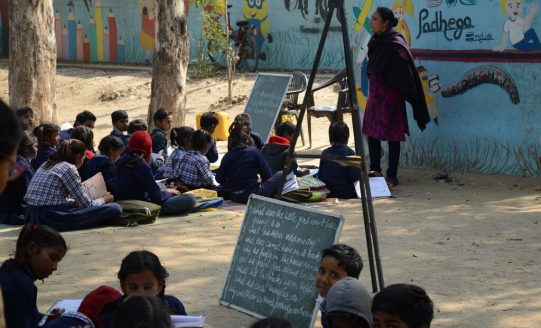

Hablar de justicia social es hablar de educación inclusiva; es hablar de asegurar
que todos los niños y niñas tengan derecho a una educación inclusiva, equitativa
y de calidad; es hablar de filosofía, de ética y de humanismo; es hablar de personas.
Un país no es más rico si tiene mucha materia prima, un país es rico cuando tiene
un nivel alto de educación.
Por eso estas navidades concienciate y disfruta de intentando aportar
tu granito de arena moral o de la forma que puedas.